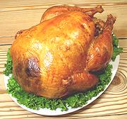
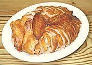
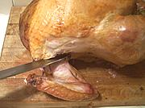
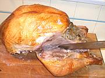
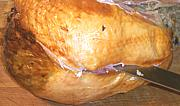
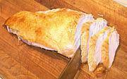
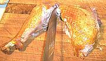
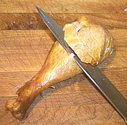
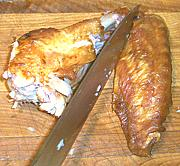

SAFARI
Users
Objective
The objective is to cut the turkey up into neat serving pieces, presenting it attractively, distributing the skin uniformly while keeping it crisp, and above all, avoiding making an awful mess and a fool of yourself.
Carving at the table is not a good idea. A big reason is that if you screw up you're going to do it right in front of everyone. Another is the traditional table method of slicing the breasts puts most of the skin on the first slice and little for anyone else, and sliced in that direction the breast meat tends to break up. Yet another reason to carve in the kitchen is you get to nibble on prize bits of turkey before anyone else gets any. If you aren't convinced by now, well, it's your party so go for it.
Don't expect to get your slices "gourmet magazine" perfect - for those photos they refrigerate the turkey and carve it dead cold. Much more manageable that way, but if your objective is eating nice warm turkey fresh from the oven you'll have to accept less precision.
Equipment
You're going to need a long, ultra-sharp carving knife. A 10 inch blade is best for turkey but you're unlikely to find any longer than 8 inches at your local kitchen store so that will have to do if you haven't ordered in advance. Alternatively, you can use a good quality electric knife. This is particularly helpful if you are not expert with a knife, or if you need to slice very thin.
A boning knife is helpful for disjointing, and a carving fork with two long tines can be useful for keeping a slippery turkey stable while you cut it, or you can just grasp it. A good cutting board is, of course, essential.
Presentation
 When your turkey comes out of the oven, allow it to drain for a few minutes. Catch any juices for addition to your gravy stock (if you are making gravy). Place the turkey on a platter and set it out for all to admire. If you know a bag piper you can parade the turkey through the dining room.
Now, tent it loosely with aluminum foil because it has to rest for
at least 30 minutes or it'll be difficult to carve and be a
mess. Everyone must be told not to touch it and there must be no dogs
allowed in the house.
Carving
 A major objective when carving is to keep the bird upright and keep the skin from contacting liquids as much as possible so it stays crisp.
Sharpen your carving knife until it is razor sharp (or plug in your electric carving knife).
When the turkey is properly rested,and not before, bring the platter into the kitchen and offload the turkey to your cutting board. Clean the platter to receive the carved turkey slices and pieces.
Remove as much stuffing as you can from the bird, put it in a bowl. Warm it up for serving when needed.

Start with the wings. Bend them out until you can cut them away from the
breasts, then bend them far enough out to dislocate the joint so you can get
your knife point into the joint to cut it loose. Set the wings aside
keeping the skin dry.

Next the legs. Grab a leg by the knee and pull it far enough out to
dislocate the joint with the body. Get the point of your knife into the
joint and cut the thigh and leg loose. Set the legs aside keeping the skin
dry.

You want to remove the breast whole. Start by making a cut lengthwise
right against the keel. Keep it upright - it's shown tilted here just for
clarity. Now, pulling the breast away from the body as you cut, free the
breast meat from the keel and ribs, being careful to bring as much meat
as possible in one big lump, and being careful to disturb the skin as
little as possible. Set the breasts cut side down to keep the skin dry.
Wrap the carcass and put it in the refrigerator for future reference. More meat will be recovered from it later and it will be used to make soup stock.

Set a breast on the cutting board cut side down and slice it crosswise
like a loaf of bread but at an angle so it looks good on the platter. Try
to slice with a single stroke of the knife but if more than one stroke is
needed make them all in the same direction. Sawing will break up
the meat a lot more. Arrange the slices on the platter (see illustration)
and adjust any slices of skin that have gone askew. You should be able to
move the platter close to the board and pick up the whole breast at once. Do the other
breast and place it in the opposite direction.

Cut the thighs from the legs at the knee joint. Slice the thighs with
the grain (parallel to the bone) and arrange the slices on the platter
leaving the bone behind. Dark meat does break up a lot more than white,
so be prepared for that.

Cut shallow slices off the legs until you're down to tendons. Put the
leg bones with remaining meat and tendons with the carcass for attention
later.

Cut the wing joints apart. The inner joint can be treated like the
thigh or left whole. The outer joint is best left whole, along with the
wing tip if it has been left on.
Serve
Return leftovers to the refrigerator as soon as possible.
Next Day
Pull the carcass and the bones out of the refrigerator. Cut away every bit of remaining meat that can be removed in useful hunks - and that'll be even pretty small pieces if you use them for soup.
Chop up the stripped carcass and put it with the bones and all other remaining bits, including any bits of stuffing, into a suitable pot. Add water, bring to a simmer and simmer for two or three hours to make a tasty soup stock. Strain the stock and remove the fat (use your gravy separator). Let any debris settle, then pour the soup off the debris.
You can freeze the stock if you will not be using it within the next couple of days, but here's the method I use (because my freezer compartment is always crammed:
- Prepare clean heat resistant jars and well fitting lids (the best lids have a dimple in the center). I use pickle or sauerkraut jars and the like.
- Put the cleaned and defatted stock in a sauce pan and bring it to a boil uncovered (so you can see when it's boiling and so it won't foam over on the stove).
- Take it off the heat and put the lid on. Let it sit just a few minutes so it doesn't shock the jars too bad, but is still at a sterilizing temperature (190 °F/90°C).
- Pour the stock into the jars. These should be sized so they are very full. Put the lids on tight.
- Leave out on the counter until they completely cooled. If you have dimpled lids you will here the snap down. Otherwise check that they are sucked down tight with no spring.
- Put the jars in the fridge. I don't know how long they will keep without spoiling because I discard any that are a year old.